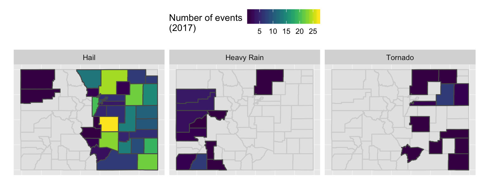
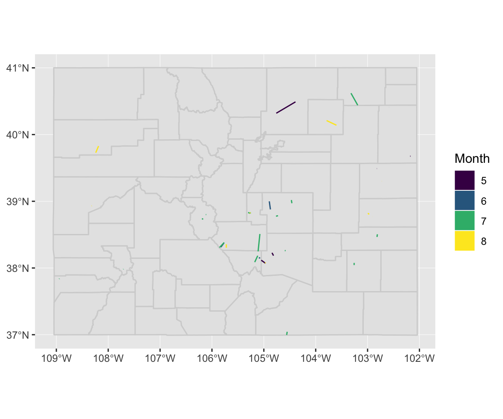
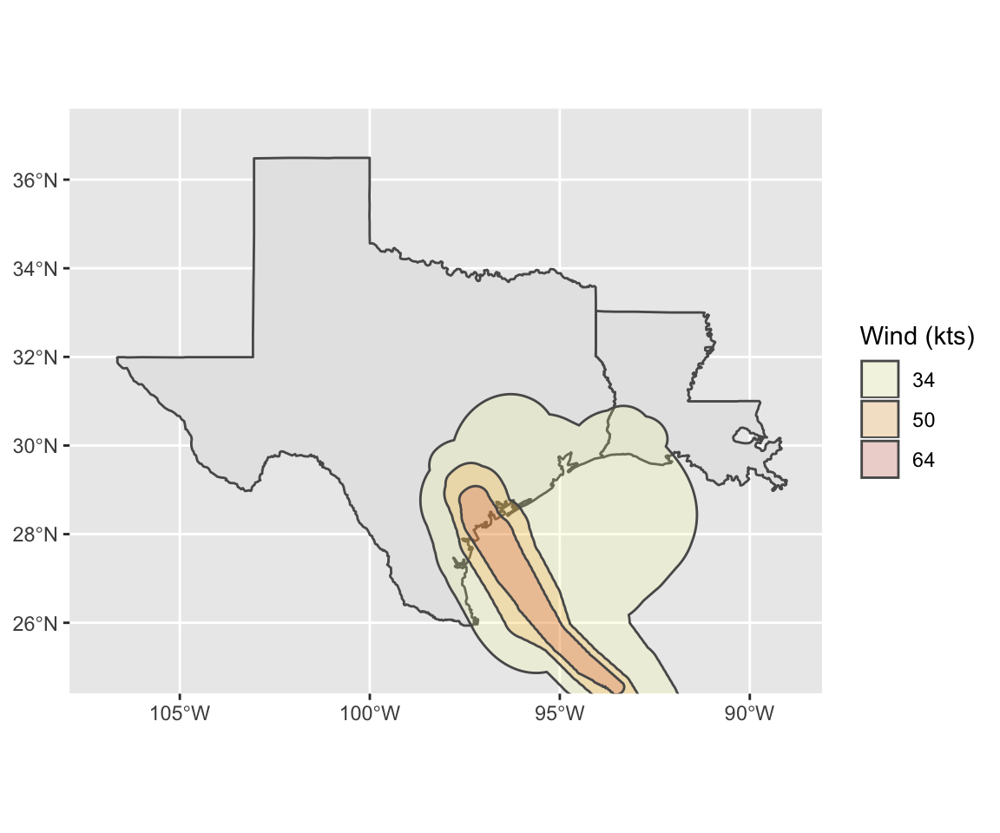
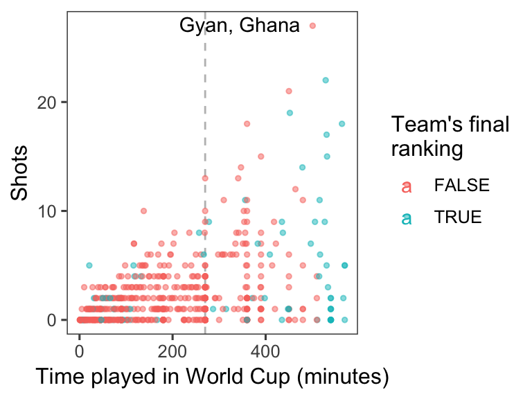
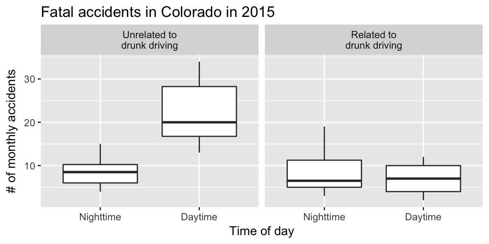
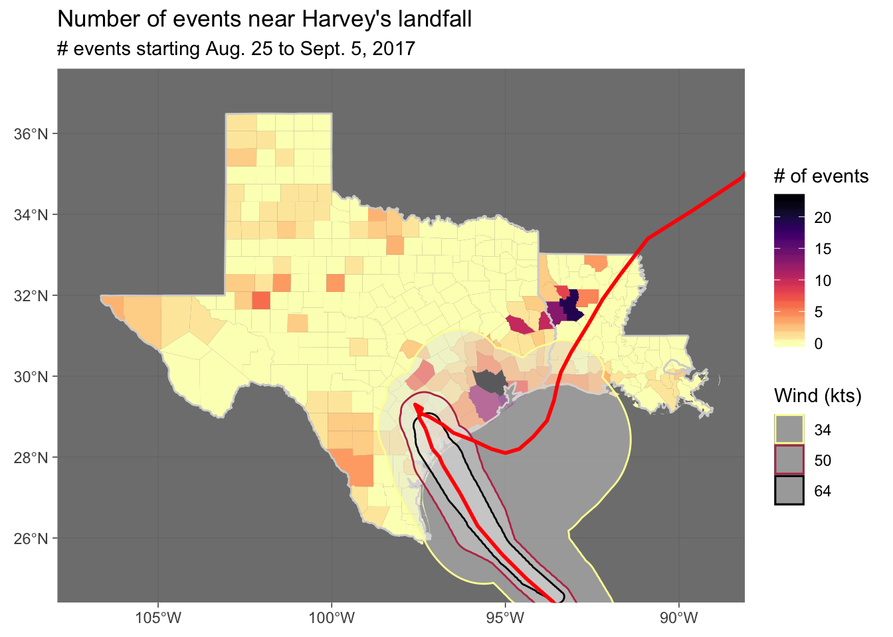

Chapter 1 Exploring data #2-ng
Download a pdf of the lecture slides covering this topic.
1.1 Lists
In this section, we’ll talk about the purrr package, which contains functions that allow you to map a function to all values in a vector, matrix, or list.
First, you need to know about the list object type in R:
A list has different elements, just like a data frame has different columns. However, the different elements of a list can have different lengths (unlike the columns of a data frame). The different elements can also have different classes.
bar <- list(some_letters = letters[1:3],
some_numbers = 1:5,
some_logical_values = c(TRUE, FALSE))
bar## $some_letters
## [1] "a" "b" "c"
##
## $some_numbers
## [1] 1 2 3 4 5
##
## $some_logical_values
## [1] TRUE FALSETo index an element from a list, use double square brackets. You can use bracket indexing either with numbers (which element in the list?) or with names. You can also index lists with the $ operator.
bar[[1]]## [1] "a" "b" "c"bar[["some_numbers"]]## [1] 1 2 3 4 5bar$some_logical_values## [1] TRUE FALSETo access a specific value within a list element we can index the element e.g.:
bar[[1]][[2]]## [1] "b"Lists can be used to contain data with an unusual structure and / or lots of different components. For example, the information from fitting a regression is often stored as a list:
my_mod <- glm(rnorm(10) ~ c(1:10))
is.list(my_mod)## [1] TRUEThe names function returns the name of each element in the list:
head(names(my_mod), 3)## [1] "coefficients" "residuals" "fitted.values"my_mod[["coefficients"]]## (Intercept) c(1:10)
## 0.76916763 -0.04622007A list can even contain other lists! We can use the str function to see the structure of a list:
a_list <- list(list("a", "b"), list(1, 2))
str(a_list)## List of 2
## $ :List of 2
## ..$ : chr "a"
## ..$ : chr "b"
## $ :List of 2
## ..$ : num 1
## ..$ : num 21.2 Functions
As you move to larger projects, you will find yourself using the same code a lot.
Examples include:
- Reading in data from a specific type of equipment (air pollution monitor, accelerometer)
- Running a specific type of analysis
- Creating a specific type of plot or map
If you find yourself cutting and pasting a lot, convert the code to a function.
Advantages of writing functions include:
- Coding is more efficient
- Easier to change your code (if you’ve cut and paste code and you want to change something, you have to change it everywhere - this is an easy way to accidentally create bugs in your code)
- Easier to share code with others
You can name a function anything you want (although try to avoid names of preexisting-existing functions). You then define any inputs (arguments; separate multiple arguments with commas) and put the code to run in braces:
## Note: this code will not run
[function name] <- function([any arguments]){
[code to run]
}Here is an example of a very basic function. This function takes a number as input and adds 1 to that number.
add_one <- function(number){
out <- number + 1
return(out)
}
add_one(number = 3)## [1] 4add_one(number = -1)## [1] 0- Functions can input any type of R object (for example, vectors, data frames, even other functions and ggplot objects)
- Similarly, functions can output any type of R object
- When defining a function, you can set default values for some of the parameters
- You can explicitly specify the value to return from the function
- There are ways to check for errors in the arguments a user inputs to the function
For example, the following function inputs a data frame (datafr) and a one-element vector (child_id) and returns only rows in the data frame where it’s id column matches child_id. It includes a default value for datafr, but not for child_id.
subset_nepali <- function(datafr = nepali, child_id){
datafr <- datafr %>%
filter(id == child_id)
return(datafr)
}If an argument is not given for a parameter with a default, the function will run using the default value for that parameter. For example:
subset_nepali(child_id = "120011")## id sex wt ht mage lit died alive age
## 1 120011 1 12.8 91.2 35 0 2 5 41
## 2 120011 1 12.8 93.9 35 0 2 5 45
## 3 120011 1 13.1 95.2 35 0 2 5 49
## 4 120011 1 13.8 96.9 35 0 2 5 53
## 5 120011 1 NA NA 35 0 2 5 57If an argument is not given for a parameter without a default, the function call will result in an error. For example:
subset_nepali(datafr = nepali)## Error in filter_impl(.data, quo): Evaluation error: argument "child_id" is missing, with no default.By default, the function will return the last defined object, although the choice of using return can affect printing behavior when you run the function. For example, I could have written the subset_nepali function like this:
subset_nepali <- function(datafr = nepali, child_id){
datafr <- datafr %>%
filter(id == child_id)
}In this case, the output will not automatically print out when you call the function without assigning it to an R object:
subset_nepali(child_id = "120011")However, the output can be assigned to an R object in the same way as when the function was defined without return:
first_childs_data <- subset_nepali(child_id = "120011")
first_childs_data## id sex wt ht mage lit died alive age
## 1 120011 1 12.8 91.2 35 0 2 5 41
## 2 120011 1 12.8 93.9 35 0 2 5 45
## 3 120011 1 13.1 95.2 35 0 2 5 49
## 4 120011 1 13.8 96.9 35 0 2 5 53
## 5 120011 1 NA NA 35 0 2 5 57R is very “good” at running functions! It will look for (scope) the variables in your function in various places (environments). So your functions may run even when you don’t expect them to, potentially, with unexpected results!
The return function can also be used to return an object other than the last defined object (although this doesn’t tend to be something you need to do very often). If you did not use return in the following code, it will output “Test output”:
subset_nepali <- function(datafr = nepali, child_id){
datafr <- datafr %>%
filter(id == child_id)
a <- "Test output"
}
(subset_nepali(child_id = "120011"))## [1] "Test output"Conversely, you can use return to output datafr, even though it’s not the last object defined:
subset_nepali <- function(datafr = nepali, child_id){
datafr <- datafr %>%
filter(id == child_id)
a <- "Test output"
return(datafr)
}
subset_nepali(child_id = "120011")## id sex wt ht mage lit died alive age
## 1 120011 1 12.8 91.2 35 0 2 5 41
## 2 120011 1 12.8 93.9 35 0 2 5 45
## 3 120011 1 13.1 95.2 35 0 2 5 49
## 4 120011 1 13.8 96.9 35 0 2 5 53
## 5 120011 1 NA NA 35 0 2 5 57You can use stop to stop execution of the function and give the user an error message. For example, the subset_nepali function will fail if the user inputs a data frame that does not have a column named “id”:
subset_nepali(datafr = data.frame(wt = rnorm(10)),
child_id = "12011") Error: comparison (1) is possible only for
atomic and list types You can rewrite the function to stop if the input datafr does not have a column named “id”:
subset_nepali <- function(datafr = nepali, child_id){
if(!("id" %in% colnames(datafr))){
stop("`datafr` must include a column named `id`")
}
datafr <- datafr %>%
filter(id == child_id)
return(datafr)
}
subset_nepali(datafr = data.frame(wt = rnorm(10)),
child_id = "12011")Error in subset_nepali(datafr = data.frame(wt = rnorm(10)),
child_id = "12011") :
`datafr` must include a column named `id`The stop function is particularly important if the function would keep running with the wrong input, but would result in the wrong output.
You can also output warnings and messages using the functions warning and message. ## Other control structures
1.2.1 if / else statements
There are other control structures you can use in your R code. Two that you will commonly use within R functions are if and ifelse statements.
An if statement tells R that, if a certain condition is true, do run some code. For example, if you wanted to print out only odd numbers between 1 and 5, one way to do that is with an if statement: (Note: the %% operator in R returns the remainder of the first value (i) divided by the second value (2).)
for(i in 1:5){
if(i %% 2 == 1){
print(i)
}
}## [1] 1
## [1] 3
## [1] 5The if statement runs some code if a condition is true, but does nothing if it is false. If you’d like different code to run depending on whether the condition is true or false, you can us an if / else or an if / else if / else statement.
for(i in 1:5){
if(i %% 2 == 1){
print(i)
} else {
print(paste(i, "is even"))
}
}## [1] 1
## [1] "2 is even"
## [1] 3
## [1] "4 is even"
## [1] 5What would this code do?
for(i in 1:100){
if(i %% 3 == 0 & i %% 5 == 0){
print("FizzBuzz")
} else if(i %% 3 == 0){
print("Fizz")
} else if(i %% 5 == 0){
print("Buzz")
} else {
print(i)
}
}If / else statements are extremely useful in functions.
In R, the if statement evaluates everything in the parentheses and, if that evaluates to TRUE, runs everything in the braces. This means that you can trigger code in an if statement with a single-value logical vector:
weekend <- TRUE
if(weekend){
print("It's the weekend!")
}## [1] "It's the weekend!"This functionality can be useful with parameters you choose to include when writing your own functions (e.g., print = TRUE).
1.2.2 Some other control structures
The control structure you are most likely to use in data analysis with R is the “if / else” statement. However, there are a few other control structures you may occasionally find useful:
nextbreakwhile
You can use the next structure to skip to the next round of a loop when a certain condition is met. For example, we could have used this code to print out odd numbers between 1 and 5:
i <- 0
while(i < 5){
i <- 1 + i
if(i %% 2 == 0){
next
}
print(i)
}## [1] 1
## [1] 3
## [1] 5You can use break to break out of a loop if a certain condition is met. For example, the final code will break out of the loop once i is over 2, so it will only print the numbers 1 through 3:
i <- 0
while(i <= 5){
if(i > 2){
break
}
i <- 1 + i
print(i)
}## [1] 1
## [1] 2
## [1] 31.3 purrr functions
We often want to perform the same function on every element of a list (i.e. loop across every element). There is a whole family of map functions, within the purrr package designed to help us do this. For example:
map: Apply a function over each element of a list or column in a dataframe.map_df: Likemapbut returns a dataframe.map_dbl: Likemap, but returns a numeric vector.
Here is the syntax for map:
## Generic code
purrr::map(.x = [list, vector, or dataframe], .f = [function], ...)I’ll use the worldcup data as an example:
ex <- worldcup[ , c("Shots", "Passes", "Tackles", "Saves")]
head(ex)## Shots Passes Tackles Saves
## Abdoun 0 6 0 0
## Abe 0 101 14 0
## Abidal 0 91 6 0
## Abou Diaby 1 111 5 0
## Aboubakar 2 16 0 0
## Abreu 0 15 0 0Take the mean of all columns:
purrr::map(ex, mean)## $Shots
## [1] 2.304202
##
## $Passes
## [1] 84.52101
##
## $Tackles
## [1] 4.191597
##
## $Saves
## [1] 0.6672269Take the sum of all columns and return a dataframe:
purrr::map_df(ex, sum)## # A tibble: 1 x 4
## Shots Passes Tackles Saves
## <int> <int> <int> <int>
## 1 1371 50290 2494 397You can use your own function with any of the map functions. For example, if you wanted to calculate a value for each category that is a weighted mean, you could run:
weighted_mean <- function(soccer_stats, weight = runif(595, 0, 1)){
out <- mean(soccer_stats * weight)
return(out)
}
purrr::map(ex, weighted_mean)## $Shots
## [1] 1.127837
##
## $Passes
## [1] 41.14515
##
## $Tackles
## [1] 2.018641
##
## $Saves
## [1] 0.3490525The map() function will apply a function across a list. The different elements of the list do not have to be the same length (unlike a data frame, where the columns all have to have the same length). First let’s create a list to work with:
(ex <- list(a = c(1:5), b = rnorm(3), c = letters[1:4]))## $a
## [1] 1 2 3 4 5
##
## $b
## [1] 0.2029431 -0.1398289 0.6335547
##
## $c
## [1] "a" "b" "c" "d"This call will calculate the mean of each element:
purrr::map(.x = ex, .f = mean)## $a
## [1] 3
##
## $b
## [1] 0.232223
##
## $c
## [1] NAYou can include arguments for the function that you specify with .f, and they’ll be passed to that function. For example, to get the first value of each element, you can run:
purrr::map(ex, .f = head, n = 1)## $a
## [1] 1
##
## $b
## [1] 0.2029431
##
## $c
## [1] "a"The map_chr() function also applies a function over a list, but it returns a character vector rather than a list:
purrr::map_chr(ex, .f = head, n = 1)## a b c
## "1" "0.202943" "a"
You can use the apply functions in base R to achieve some of the same functionality as the map functions. However, the map functions work better alongside other tidyverse functions. The apply functions are useful if you are working with matrices.
You can also use for loops in R, but it is much more elegant and efficient to use the map functions instead.
1.3.1 But, but, but what about nested loops etc.?
The trick with purrr is to nest your dataset rather than nest multiple loops. There is no need for all this complexity:
for(i in 1:seq_along(x)){
for(j in 1:seq_along(y)){
for(k in 1:seq_along(z)){
f(x[i],y[j],z[k],...)
}
}
}Instead we can use nest() to create a tidy easy to follow sequence of steps:
input %>%
group_by(x, y, z) %>%
nest() %>%
mutate(result = map(data, .f)) %>%
unnest()Sometimes you’ll want to supply more than one argument to a function in parallel. The purrr package provides the pmap function to achieve this. You can provide a list of arguments to pmap and it will run through them in parallel. The “conventional” for loop method would look something like this:
for(i in seq(1, length(x), by = 1)){
out[[i]] <- f(x[[i]], y[[i]], z[[i]])
}With purrr::pmap() we can reduce the complexity of our code, limiting the potential for us to make mistake and making mistakes easier to spot. Let’s start by defining a function with multiple arugument:
fantasy_points <- function(Position, Time, Shots, Passes, Tackles, Saves){
if(Position == "Goalkeeper"){
Points = Time * 1 + Shots * 3 + Passes * 2 + Tackles * 5 + Saves * 10
}else if(Position == "Defender"){
Points = Time * 1 + Shots * 2 + Passes * 1 + Tackles * 5 + Saves * 0
}else if(Position == "Midfielder"){
Points = Time * 1 + Shots * 1 + Passes * 1 + Tackles * 4 + Saves * 0
}else if(Position == "Forward"){
Points = Time * 1 + Shots * 1 + Passes * 2 + Tackles * 3 + Saves * 0
} else{
Points = -999
}
return(Points)
}We can select the function arguments from the dataset:
params <- worldcup %>%
select(Position, Time, Shots, Passes, Tackles, Saves) %>%
mutate(Position = as.character(Position))And then add a column to the dataset with the function output:
params$Points <- params %>% purrr::pmap(fantasy_points)1.4 In-course exercise
1.4.1 Using regression models to explore data #1
For this exercise, you will need the following packages. If do not have them already, you will need to install them.
library(ggplot2)
library(broom)
library(ggfortify)- Write out (on paper, not in R) the regression equation for regressing death on dew point temperature.
- Try fitting a linear regression of death (
death) regressed on dew point temperature (dptp). - Gather the variables
cvd,resp,temp,dptp,rhum,pm10, ando3into a longer dataframe. Give the gathered columns the namesvarandval. How many rows does the new dataframe contain? - Write a function to regress
deathagainstval, the function should accept a dataframe as the argument. - Regress death against each of the 7
varvariables. Hint: First group the data, then use thenest()function to create a list of 7 dataframes one for each variable. Then usemutateandmap()to create a new variable. - Based on this regression, does there seem to be a relationship between death and dewpoint temperature in Chicago? (Hint: Try using
glanceandtidyfrom thebroompackage on the model object to get more information about the model you fit.) What is the coefficient and intercept for death - dew point temperature? Model? What is the p-value for the coefficient for dew point temperature? - Plot dew point temperature (x-axis) versus death (y-axis) for Chicago. Add in the regression line from the model you fit by using the results from
augment. - Use
autoploton the model object to generate some model diagnostic plots (make sure you have theggfortifypackage loaded and installed). - Try fitting the regression as a GLM, using
glm(). Are your coefficients different? Hint: You will need to create a new model function for theglm
1.4.1.1 Example R code:
The regression equation for the model you want to fit, regressing death on dew point temperature, is:
\[ Y_t \sim \beta_0 + \beta_1 X_t \]
where \(Y_t\) is death on day \(t\), \(X_t\) is the dew point temperature on day \(t\), and \(\beta_0\) and \(\beta_1\) are model coefficients.
Install and load the dlnm package and then load the chicagoNMMAPS data. Change the name of the dataframe to chic, so it will be shorter to call for the rest of your work.
# install.packages("dlnm")
library(dlnm)
chic <- data("chicagoNMMAPS")
chic <- chicagoNMMAPSGather the variables into a longer dataframe:
chic_long <- chic %>%
gather("var", "val", 8:14)
nrow(chic_long)## [1] 35798Write the regresssion function:
model_lm <- function(df) {
lm(death ~ val, data = df)
}Fit models:
lm_models <- chic_long %>%
group_by(var) %>%
nest() %>%
mutate(mod = map(data, model_lm))Check for a relationship between death and dptp:
Use functions from the broom package to pull the same information about the model in a “tidy” format. To find out if the evidence for a linear association between temperature and dewpoint temperature, use the tidy function to get model coefficients in a tidy format:
lm_estimates <- lm_models %>%
mutate(tidy_lm = mod %>% map(tidy)) %>%
unnest(tidy_lm) %>%
rename(estimate_lm = "estimate") %>%
select(var, term, estimate_lm) %>%
filter(var == "dptp")You can check overall model summaries using the glance function. The glance function can return the p-value:
details_glance <- lm_models %>%
mutate(glance_lm = mod %>% map(glance)) %>%
unnest(glance_lm) %>%
select(var, p.value) %>%
filter(var == "dptp")To create plots of the observations and the fit model, use the augment function to add model output (e.g., predictions, residuals) to the original dataframe of observed temperatures and dew point temperatures:
details_augment <- lm_models %>%
mutate(augment_lm = mod %>% map(augment)) %>%
unnest(augment_lm) %>%
filter(var == "dptp")Plot these two variables and add in the fitted line from the model (note: I’ve used the color option to make the color of the points gray). Use the output from augment to create a plot of the original data, with the predicted values used to plot a fitted line.
details_augment %>%
rename(dptp = "val") %>%
ggplot(aes(x = dptp, y = death)) +
geom_point(size = 0.8, alpha = 0.5, col = "gray") +
geom_line(aes(x = dptp, y = .fitted), color = "red", size = 2) +
theme_classic()
Make some plots to check model assumptions for the models you fit using the autoplot function on your model object, e.g.:
autoplot(lm_models$mod[[which(lm_models$var == "dptp")]]) +
theme_bw()
Try fitting models using glm(). Call it mod_glm. Compare the coefficients for the two models. You can use the tidy function on an lm or glm object to pull out just the model coefficients and associated model results. Here, I’ve used a pipeline of code to create a tidy dataframe that merges these “tidy” coefficient outputs (from the two models) into a single dataframe):
mod_glm <- function(df){
glm(death ~ val, data = df)
}compare_models <- chic_long %>%
group_by(var) %>%
nest() %>%
mutate(mod = map(data, mod_glm),
tidy_lm = mod %>% map(tidy)) %>%
unnest(tidy_lm) %>%
rename(estimate_glm = "estimate") %>%
select(var, term, estimate_glm) %>%
inner_join(lm_estimates, by = c("var", "term"))The results from the two models are identical.
1.4.2 Using regression models to explore data #2
- Does \(PM_{10}\) vary by day of the week? (Hint: The
dowvariable is a factor that gives day of the week. You can do an ANOVA analysis by fitting a linear model using this variable as the independent variable. Some of the overall model summaries will compare this model to an intercept-only model.) What day of the week is PM10 generally highest? (Check the model coefficients to figure this out.) Try to write out (on paper) the regression equation for the model you’re fitting. - Try using
glm()to run a Poisson regression of respiratory deaths (resp) on temperature during summer days. Start by creating a subset with just summer days calledsummer. (Hint: Use themonthfunction with the argumentlabel = TRUEfromlubridateto do this– just pull out the subset where the month is 6, 7, or 8, for “Jun”, “Jul”, and “Aug”.) Try to write out the regression equation for the model you’re fitting. - The coefficient for the temperature variable in this model is our best estimate (based on this model) of the log relative risk for a one degree Celcius increase in temperature. What is the relative risk associated with a one degree Celsius increase?
1.4.2.1 Example R code:
Fit a model of \(PM_{10}\) regressed on day of week, where day of week is a factor.
mod_2 <- lm(pm10 ~ dow, data = chic)
tidy(mod_2)## term estimate std.error statistic p.value
## 1 (Intercept) 27.521671 0.7303211 37.684344 7.467602e-273
## 2 dowMonday 6.132236 1.0339702 5.930767 3.224025e-09
## 3 dowTuesday 6.795433 1.0268941 6.617462 4.048930e-11
## 4 dowWednesday 8.476816 1.0261689 8.260644 1.850086e-16
## 5 dowThursday 8.804654 1.0240148 8.598171 1.078208e-17
## 6 dowFriday 9.481589 1.0261689 9.239794 3.609870e-20
## 7 dowSaturday 3.660201 1.0268941 3.564342 3.682785e-04Use glance to check some of the overall summaries of this model. The statistic column here is the F statistic from test comparing this model to an intercept-only model.
glance(mod_2)## r.squared adj.r.squared sigma statistic p.value df logLik
## 1 0.02587711 0.0246735 19.07243 21.49955 4.607646e-25 7 -21234.11
## AIC BIC deviance df.residual
## 1 42484.21 42536.13 1766407 4856As a note, you may have heard in previous statistics classes that you can use the anova() command to compare this model to a model with only an intercept (i.e., one that only fits a global mean and uses that as the expected value for all of the observations). Note that, in this case, the F value from anova for this model comparison is the same as the statistic you got in the overall summary statistics you get with glance in the previous code.
anova(mod_2)## Analysis of Variance Table
##
## Response: pm10
## Df Sum Sq Mean Sq F value Pr(>F)
## dow 6 46924 7820.6 21.5 < 2.2e-16 ***
## Residuals 4856 1766407 363.8
## ---
## Signif. codes: 0 '***' 0.001 '**' 0.01 '*' 0.05 '.' 0.1 ' ' 1The overall p-value from anova for with day-of-week coefficients versus the model that just has an intercept is < 2.2e-16. This is well below 0.05, which suggests that day-of-week is associated with PM10 concentration, as a model that includes day-of-week does a much better job of explaining variation in PM10 than a model without it does.
Use a boxplot to visually compare PM10 by day of week.
ggplot(chic, aes(x = dow, y = pm10)) +
geom_boxplot()
Now try the same plot, but try using the ylim = option to change the limits on the y-axis for the graph, so you can get a better idea of the pattern by day of week (some of the extreme values are very high, which makes it hard to compare by eye when the y-axis extends to include them all).
ggplot(chic, aes(x = dow, y = pm10)) +
geom_boxplot() +
ylim(c(0, 100))## Warning: Removed 292 rows containing non-finite values (stat_boxplot).
Create a subset called summer with just the summer days:
library(lubridate)##
## Attaching package: 'lubridate'## The following object is masked from 'package:base':
##
## datesummer <- chic %>%
mutate(month = month(date, label = TRUE)) %>%
filter(month %in% c("Jun", "Jul", "Aug"))
summer %>%
slice(1:3)## # A tibble: 3 x 14
## date time year month doy dow death cvd resp temp
## <date> <int> <dbl> <ord> <int> <fctr> <int> <int> <int> <dbl>
## 1 1987-06-01 152 1987 Jun 152 Monday 112 60 5 23.61111
## 2 1987-06-02 153 1987 Jun 153 Tuesday 111 57 7 22.22222
## 3 1987-06-03 154 1987 Jun 154 Wednesday 120 59 9 20.55556
## # ... with 4 more variables: dptp <dbl>, rhum <dbl>, pm10 <dbl>, o3 <dbl>Use glm() to fit a Poisson model of respiratory deaths regressed on temperature. Since you want to fit a Poisson model, use the option family = poisson(link = "log").
mod_3 <- glm(resp ~ temp, data = summer,
family = poisson(link = "log"))
glance(mod_3)## null.deviance df.null logLik AIC BIC deviance df.residual
## 1 1499.417 1287 -3210.68 6425.36 6435.682 1493.753 1286tidy(mod_3)## term estimate std.error statistic p.value
## 1 (Intercept) 1.910316958 0.058372529 32.726301 6.600945e-235
## 2 temp 0.006136743 0.002580526 2.378098 1.740221e-02Use the fitted model coefficient to determine the relative risk for a one degree Celcius increase in temperature. First, remember that you can use the tidy() function to read out the model coefficients. The second of these is the value for the temperature coefficient. That means that you can use indexing ([2]) to get just that value. That’s the log relative risk; take the exponent to get the relative risk.
tidy(mod_3) %>%
filter(term == "temp") %>%
mutate(log_rr = exp(estimate))## term estimate std.error statistic p.value log_rr
## 1 temp 0.006136743 0.002580526 2.378098 0.01740221 1.006156As a note, you can use the conf.int parameter in tidy to also pull confidence intervals:
tidy(mod_3, conf.int = TRUE)## term estimate std.error statistic p.value conf.low
## 1 (Intercept) 1.910316958 0.058372529 32.726301 6.600945e-235 1.795647330
## 2 temp 0.006136743 0.002580526 2.378098 1.740221e-02 0.001082325
## conf.high
## 1 2.02446414
## 2 0.01119783You could use this to get the confidence interval for relative risk (check out the mutate_at function if you haven’t seen it before):
tidy(mod_3, conf.int = TRUE) %>%
select(term, estimate, conf.low, conf.high) %>%
filter(term == "temp") %>%
mutate_at(vars(estimate:conf.high), funs(exp(.)))## term estimate conf.low conf.high
## 1 temp 1.006156 1.001083 1.0112611.4.3 Exploring Fatality Analysis Reporting System (FARS) data
- Visit http://metrocosm.com/10-years-of-traffic-accidents-mapped.html and explore the interactive visualization created by Max Galka using this public dataset on US fatal motor vehicle accidents.
- Go to FARS web page. We want to get the raw data on fatal accidents. Navigate this page to figure out how you can get this raw data for the whole county for 2015 (hint: you’ll need to access the raw data using FTP, and you may have more success with some web browsers that others). Save 2015 “National” data (csv format) to your computer. What is the structure of how this data is saved (e.g., directory structure, file structure)?
- On the FARS web page, find the documentation describing this raw data. (The relevant documentation file is called Fatality Analysis Reporting System (FARS) Analytical User’s Manual 1975-2015) Look through both this documentation and the raw files you downloaded to figure out what information is included in the data.
- Read the
accident.csvfile for 2015 into R (this is one of the files you’ll get if you download the raw data for 2015). Use the documentation to figure out what each column represents. - Discuss what steps you would need to take to create the following plot. To start, don’t write any code, just develop a plan. Talk about what the dataset should look like right before you create the plot and what functions you could use to get the data from its current format to that format. (Hint: Functions from the
lubridatepackage will be very helpful, includingydayandwday). - Discuss which of the variables in this dataset could be used to merge the dataset with other appropriate data, either other datasets in the FARS raw data, or outside datasets.
- Try to write the code to create the plot below. This will include some code for cleaning the data and some code for plotting. There is an example answer below, but I’d like you to try to figure it out yourselves first.

1.4.3.1 Example R code
Here is example code for the section above:
library(tidyverse)
library(lubridate)
library(ggthemes)
accident <- read_csv("data/accident.csv") %>%
select(DAY:MINUTE) %>%
select(-DAY_WEEK) %>%
unite(date, DAY:MINUTE, sep = "-", remove = FALSE) %>%
mutate(date = dmy_hm(date),
yday = yday(date),
weekday = wday(date, label = TRUE, abbr = FALSE),
weekend = weekday %in% c("Saturday", "Sunday"))
accident %>%
filter(!is.na(yday)) %>%
group_by(yday) %>%
summarize(accidents = n(),
weekend = first(weekend)) %>%
ggplot(aes(x = yday, y = accidents, color = weekend)) +
geom_point(alpha = 0.5) +
xlab("Day of the year in 2015") +
ylab("# of fatal accidents") +
theme_few() +
geom_smooth(se = FALSE)
1.4.4 Using a function and purrr to create state-specific plots
Next, you will write a function to create state-specific plots from this data, then use it to create plots for the states of Colorado, Texas, California, and New York.
- The FARS data includes a column called
STATE, but it gives state as a one- or two-digit code, rather than by name. These codes are the state Federal Information Processing Standard (FIPS) codes. A dataset with state names and FIPS codes is available at http://www2.census.gov/geo/docs/reference/state.txt. Read that data into an R object calledstate_fipsand clean it so the first few lines look like this (hint: to change thestatecolumn to an integer class, you can use the functionas.integer):
## # A tibble: 5 x 2
## state state_name
## <int> <chr>
## 1 1 Alabama
## 2 2 Alaska
## 3 4 Arizona
## 4 5 Arkansas
## 5 6 California- Read the 2015 FARS data into an R object named
accident. Use all the date and time information to create a column nameddatewith the date and time of the accident. Include information on whether the accident was related to drunk driving (FALSE if there were 0 drunk drivers, TRUE if there were one or more), and create columns that gives whether the accident was during the day (7 AM to 7 PM) or not as well as the month of the accident (for this last column, you can either retain it from the original data or recalculate it based on the newdatevariable). Filter out any values where the date-time does not render (i.e.,dateis a missing value). The first few rows of the cleaned dataframe should look like this:
## # A tibble: 5 x 5
## state date drunk_dr daytime month
## <int> <dttm> <lgl> <lgl> <dbl>
## 1 1 2015-01-01 02:40:00 TRUE FALSE 1
## 2 1 2015-01-01 22:13:00 FALSE FALSE 1
## 3 1 2015-01-01 01:25:00 TRUE FALSE 1
## 4 1 2015-01-04 00:57:00 TRUE FALSE 1
## 5 1 2015-01-07 07:09:00 FALSE TRUE 1- Join the information from
state_fipsinto theaccidentdataframe. There may be a few locations in thestate_fipsdataframe that are not included in theaccidentdataframe (e.g., Virgin Islands), so when you join keep all observations inaccidentbut only the observations instate_fipsthat match at least one row ofaccident. The first few rows of the joined dataset should look like this:
## # A tibble: 5 x 6
## state date drunk_dr daytime month state_name
## <int> <dttm> <lgl> <lgl> <dbl> <chr>
## 1 1 2015-01-01 02:40:00 TRUE FALSE 1 Alabama
## 2 1 2015-01-01 22:13:00 FALSE FALSE 1 Alabama
## 3 1 2015-01-01 01:25:00 TRUE FALSE 1 Alabama
## 4 1 2015-01-04 00:57:00 TRUE FALSE 1 Alabama
## 5 1 2015-01-07 07:09:00 FALSE TRUE 1 Alabama- Summarize the data to get the total number of accidents in Colorado in each month, separated by (1) daytime and nighttime and (2) related or unrelated to drunk driving (in other words, in January, how many daytime accidents were there that were unrelated to drunk driving? How many nighttime accidents that were unrelated to drunk driving? etc.). The summarized data should look like this:
## # A tibble: 48 x 4
## # Groups: daytime, month [?]
## daytime month drunk_dr accidents
## <lgl> <dbl> <lgl> <int>
## 1 FALSE 1 FALSE 9
## 2 FALSE 1 TRUE 6
## 3 FALSE 2 FALSE 6
## 4 FALSE 2 TRUE 3
## 5 FALSE 3 FALSE 5
## 6 FALSE 3 TRUE 11
## 7 FALSE 4 FALSE 11
## 8 FALSE 4 TRUE 11
## 9 FALSE 5 FALSE 9
## 10 FALSE 5 TRUE 6
## # ... with 38 more rows- Write a function that inputs a dataframe (
df) and outputs this type of summary dataframe (like the one just created for Colorado) for whatever data is in the input dataframe. Below are some examples of how this function should work:
colorado_data <- accident %>%
filter(state_name == "Colorado")
colorado_summary <- summarize_fars(df = colorado_data)
head(colorado_summary)## # A tibble: 6 x 4
## # Groups: daytime, month [3]
## daytime month drunk_dr accidents
## <lgl> <dbl> <lgl> <int>
## 1 FALSE 1 FALSE 9
## 2 FALSE 1 TRUE 6
## 3 FALSE 2 FALSE 6
## 4 FALSE 2 TRUE 3
## 5 FALSE 3 FALSE 5
## 6 FALSE 3 TRUE 11# Note also that you can pipe with the new function:
accident %>%
filter(state_name == "Texas") %>%
summarize_fars() %>%
tbl_df() %>%
slice(1:3)## # A tibble: 3 x 4
## daytime month drunk_dr accidents
## <lgl> <dbl> <lgl> <int>
## 1 FALSE 1 FALSE 77
## 2 FALSE 1 TRUE 52
## 3 FALSE 2 FALSE 74- Once you’ve written the function, see if you can figure out what the following code does. How does the new function fit in? (Note: We could have achieved the same thing with basic
dplyrcode, but this framework will allow you to ultimately do a lot more than you can withdplyr.)
library(purrr)
accident %>%
filter(state_name %in% c("Colorado", "Texas", "California", "New York")) %>%
group_by(state_name) %>%
nest() %>%
mutate(summary = map(data, summarize_fars)) %>%
select(-data) %>%
unnest() - Write code to create boxplots for Colorado of the distribution of total accidents within each month. Create separate boxplots for daytime and nighttime accidents, and facet by whether the accident was related to drunk driving. The plot should look like the plot below.

- Now write a function called
plot_farsto create a plot like the one you just made for Colorado for any dataframe with the format ofaccident(i.e., same number, types, and names of columns). Test it on subsets of the data for several states (Colorado, Texas, California, and New York). (Hint: To get a function to print out a plot created with ggplot, you will need to explicitly print the output from your function. See the examples of using the function below.)
Here are some examples of what should happen when you run this function:
co_plot <- plot_fars(df = filter(accident, state_name == "Colorado"))
print(co_plot)
accident %>%
filter(state_name == "Texas") %>%
plot_fars() %>%
print()
- Once you have written this function, what happens when you run the following code?
library(purrr)
state_plots <- accident %>%
filter(state_name %in% c("Colorado", "Texas", "California", "New York")) %>%
group_by(state_name) %>%
nest() %>%
mutate(plots = map(data, plot_fars))
class(state_plots[["plots"]])
class(state_plots[["plots"]][[1]])
print(state_plots[["plots"]][[1]])$plot- Install the
cowplotpackage (this is aggplot2extension) and then try running the following code. What happens when you run this code?
plot_grid(plotlist = state_plots[["plots"]],
ncol = 2, labels = "AUTO")1.4.4.1 Example R code
Here is the code to read the dataset with state names and FIPS codes at http://www2.census.gov/geo/docs/reference/state.txt into an R object called state_fips and clean it so the first few lines:
## # A tibble: 5 x 2
## state state_name
## <int> <chr>
## 1 1 Alabama
## 2 2 Alaska
## 3 4 Arizona
## 4 5 Arkansas
## 5 6 CaliforniaNote that you can read this file directly from the website using read_delim.
Read the 2015 FARS data into an R object named accident. Use all the date and time information to create a column named date with the date and time of the accident. Include information on whether the accident was related to drunk driving (FALSE if there were 0 drunk drivers, TRUE if there were one or more), and create columns that gives whether the accident was during the day (7 AM to 7 PM) or not as well as the month of the accident (for this last column, you can either retain it from the original data or recalculate it based on the new date variable). Filter out any values where the date-time does not render (i.e., date is a missing value). You can use the following code to do all this:
## # A tibble: 5 x 5
## state date drunk_dr daytime month
## <int> <dttm> <lgl> <lgl> <dbl>
## 1 1 2015-01-01 02:40:00 TRUE FALSE 1
## 2 1 2015-01-01 22:13:00 FALSE FALSE 1
## 3 1 2015-01-01 01:25:00 TRUE FALSE 1
## 4 1 2015-01-04 00:57:00 TRUE FALSE 1
## 5 1 2015-01-07 07:09:00 FALSE TRUE 1A few notes:
- Notice that
selectis using the:operator to pick several columns in a row. - Some of the column names in all caps are changed to lower case to make them easier to work with.
- The
DAY_WEEKcolumn is in the middle of other date columns, but if you remove it, you can useunitewith:to join together all the date-time columns and then uselubridateto change this column into the right class. - A logical operator is used inside a
mutatecall to create a column of whether the accident involved drunk driving (one or more drunk drivers involved) - The
hourfunction fromlubridateis used to check if the time of the accident falls in “daytime” or not - Some of the accidents are missing some date information. A
filteris used to filter that out.
Join the information from state_fips into the accident dataframe. There may be a few locations in the state_fips dataframe that are not included in the accident dataframe (e.g., Virgin Islands), so when you join keep all observations in accident but only the observations in state_fips that match at least one row of accident. You can use the following code for this:
## # A tibble: 5 x 6
## state date drunk_dr daytime month state_name
## <int> <dttm> <lgl> <lgl> <dbl> <chr>
## 1 1 2015-01-01 02:40:00 TRUE FALSE 1 Alabama
## 2 1 2015-01-01 22:13:00 FALSE FALSE 1 Alabama
## 3 1 2015-01-01 01:25:00 TRUE FALSE 1 Alabama
## 4 1 2015-01-04 00:57:00 TRUE FALSE 1 Alabama
## 5 1 2015-01-07 07:09:00 FALSE TRUE 1 AlabamaSummarize the data to get the total number of accidents, separated by (1) daytime and nighttime and (2) related or unrelated to drunk driving, in each month (in other words, in January, how many daytime accidents were there that were unrelated to drunk driving? How many nighttime accidents that were unrelated to drunk driving? etc.). You can do that with this code:
accident %>%
filter(state_name == "Colorado") %>%
group_by(daytime, month, drunk_dr) %>%
summarize(accidents = n())## # A tibble: 48 x 4
## # Groups: daytime, month [?]
## daytime month drunk_dr accidents
## <lgl> <dbl> <lgl> <int>
## 1 FALSE 1 FALSE 9
## 2 FALSE 1 TRUE 6
## 3 FALSE 2 FALSE 6
## 4 FALSE 2 TRUE 3
## 5 FALSE 3 FALSE 5
## 6 FALSE 3 TRUE 11
## 7 FALSE 4 FALSE 11
## 8 FALSE 4 TRUE 11
## 9 FALSE 5 FALSE 9
## 10 FALSE 5 TRUE 6
## # ... with 38 more rowsAs a note, you may want to create a table (for example, for a report) from the data at this stage. You could use unite then spread to do this pretty easily:
accident %>%
filter(state_name == "Colorado") %>%
mutate(daytime = factor(daytime, labels = c("Nighttime", "Daytime")),
drunk_dr = factor(drunk_dr,
labels = c("Not drunk driving", "Drunk driving"))) %>%
group_by(daytime, month, drunk_dr) %>%
summarize(accidents = n()) %>%
ungroup() %>%
unite(category, daytime, drunk_dr, sep = " / ") %>%
spread(key = category, value = accidents) %>%
knitr::kable()| month | Daytime / Drunk driving | Daytime / Not drunk driving | Nighttime / Drunk driving | Nighttime / Not drunk driving |
|---|---|---|---|---|
| 1 | 7 | 20 | 6 | 9 |
| 2 | 1 | 22 | 3 | 6 |
| 3 | 7 | 12 | 11 | 5 |
| 4 | 6 | 19 | 11 | 11 |
| 5 | 4 | 20 | 6 | 9 |
| 6 | 8 | 22 | 8 | 5 |
| 7 | 4 | 26 | 12 | 6 |
| 8 | 9 | 14 | 13 | 9 |
| 9 | 10 | 38 | 9 | 14 |
| 10 | 5 | 26 | 8 | 5 |
| 11 | 1 | 13 | 10 | 8 |
| 12 | 3 | 15 | 5 | 5 |
Write a function that inputs a dataframe (df) and outputs this type of summary dataframe (like the one just created for Colorado). You can do that with the following code. Note that, because it inputs a dataframe and outputs a dataframe, you can include it in a pipeline.
summarize_fars <- function(df){
df %>%
group_by(daytime, month, drunk_dr) %>%
summarize(accidents = n())
}Once you’ve written the function, see if you can figure out what the following code does. This code limits the data to data from four states and then applies the summarize_fars function that you just wrote to the subset of data from each state. Finally, since we nest to do that, the pipeline includes some lines to unnest the data to get back to an unnested data frame:
library(purrr)
accident %>%
filter(state_name %in% c("Colorado", "Texas", "California", "New York")) %>%
group_by(state_name) %>%
nest() %>%
mutate(summary = map(data, summarize_fars)) %>%
select(-data) %>%
unnest() Write code to create boxplots for Colorado of the distribution of total accidents within each month. Create separate boxplots for daytime and nighttime accidents, and facet by whether the accident was related to drunk driving. You can do that with this code:
accident %>%
filter(state_name == "Colorado") %>%
mutate(drunk_dr = factor(drunk_dr, labels = c("Unrelated to\ndrunk driving",
"Related to\ndrunk driving")),
daytime = factor(daytime, labels = c("Nighttime", "Daytime"))) %>%
group_by(daytime, month, drunk_dr) %>%
summarize(accidents = n()) %>%
ggplot(aes(x = daytime, y = accidents, group = daytime)) +
geom_boxplot() +
facet_wrap(~ drunk_dr, ncol = 2) +
xlab("Time of day") + ylab("# of monthly accidents") +
ggtitle(paste("Fatal accidents in", "Colorado", "in 2015"))
Now write a function called plot_fars to create a plot like the one you just made for Colorado for any dataframe with the format of accident (i.e., same number, types, and names of columns). Test it on subsets of the data for several states (Colorado, Texas, California, and New York). (Hint: To get a function to print out a plot created with ggplot, you must explicitly print the plot object. For example, you could assign the plot to fars_plot, and then you would run print(fars_plot) within your loop as the last step.)
Notice how similar this function is to the code you wrote in the previous step.
Once you have written this function, what happens when you run the following code? The following code applies this function to the subset of data from each of four states. The output (state_plots) is a nested dataframe, where the new plots column is a list of ggplot objects. If you run print on this list, it will print each of these plots out separately (use the arrow buttons in the “Plots” Pane in RStudio to browse through these plots).
library(purrr)
state_plots <- accident %>%
filter(state_name %in% c("Colorado", "Texas", "California", "New York")) %>%
group_by(state_name) %>%
nest() %>%
mutate(plots = map(data, plot_fars))
state_plots
class(state_plots)
class(state_plots[["plots"]])
class(state_plots[["plots"]][[1]])
state_plots[["plots"]][[1]]$plotInstall the cowplot package (this is a ggplot2 extension) and then try running the following code. What happens? The plot_grid function, if you input a list with ggplot objects using the plotlist argument, will print all the plots out on the same page.
library(cowplot)
plot_grid(plotlist = state_plots[["plots"]],
ncol = 2, labels = "AUTO")